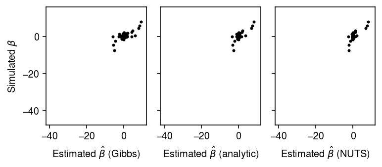

Empirical Bayes inference for the horseshoe prior
Table of Contents
Introduction
The horseshoe prior (Carvalho et al. 2009) is \( \DeclareMathOperator\N{\mathcal{N}} \DeclareMathOperator\HalfCauchy{C^+} \)
\begin{align} \beta_j \mid \lambda_j, \tau &\sim \N(0, \lambda_j^2 \tau^2)\\ \lambda_j &\sim \HalfCauchy(0, 1). \end{align}Commonly, it is used as a prior for EBNM
\begin{equation} x_j \mid \beta_j, \sigma^2 \sim \N(\beta_j, \sigma^2). \end{equation}Inference is commonly performed by MCMC or by VI (e.g. Ghosh and Doshi-Velez 2018); however, recently a fast scheme for EB inference was proposed (van der Pas et al. 2014). Jason Willwerscheid gave an example where EB inference does poorly, which we investigate here.
Setup
import contextlib import numpy as np import pandas as pd import torch import pyro
import rpy2.robjects.packages import rpy2.robjects.pandas2ri rpy2.robjects.pandas2ri.activate() horseshoe = rpy2.robjects.packages.importr('horseshoe')
%matplotlib inline %config InlineBackend.figure_formats = set(['retina'])
import matplotlib.pyplot as plt plt.rcParams['figure.facecolor'] = 'w' plt.rcParams['font.family'] = 'Nimbus Sans'
Results
Simulation
def simulate(n, s, tau, seed): rng = np.random.default_rng(seed) lam = abs(rng.standard_cauchy(size=n)) beta = rng.normal(scale=s * lam * tau) x = rng.normal(loc=beta, scale=s) return x, beta def run_mcmc(x, s, tauhat, burn=1000, **kwargs): with contextlib.redirect_stdout(None): pm = horseshoe.HS_normal_means(x, method_tau='fixed', tau=tauhat, method_sigma='fixed', Sigma2=s ** 2, burn=burn).rx2('BetaHat') return pm def run_analytic(x, s, tauhat, **kwargs): try: pm = horseshoe.HS_post_mean(x, tauhat, s ** 2) except: pm = np.full(np.nan, beta.shape) return pm def mse(betahat, beta): return np.square(pm - beta).mean() def trial(n, s, tau, seed=1, **kwargs): x, beta = simulate(n, s, tau, seed) tauhat = horseshoe.HS_MMLE(x, s ** 2)[0] res = {f'mse_{m}': mse(globals()[f'run_{m}'](x, s, tauhat, **kwargs), beta) for m in ('mcmc', 'analytic')} res['n'] = n res['s'] = s res['tau'] = tau res['tauhat'] = tauhat res['trial'] = seed return pd.Series(res) def evaluate(s, tau, n_trials=1, **kwargs): res = [] for n in (100, 500, 1000): for i in range(n_trials): res.append(trial(n, s, tau, seed=i, **kwargs)) return pd.DataFrame(res)
Scenario 1
Use the hyperparameters Jason used.
s = 2 tau = 0.3 x, beta = simulate(n=100, s=s, tau=tau, seed=3) tauhat = horseshoe.HS_MMLE(x, s ** 2)[0] pm_mcmc = run_mcmc(x, s=s, tauhat=tauhat) pm_analytic = run_analytic(x, s=s, tauhat=tauhat)
Compare the estimated posterior means by MCMC vs. the analytic solution.
plt.clf() fig, ax = plt.subplots(1, 2, sharey=True) fig.set_size_inches(4, 2.5) for a in ax: a.set_aspect('equal', adjustable='datalim') ax[0].scatter(pm_mcmc, beta, c='k', s=4) ax[0].set_xlabel(r'Posterior mean $\hat\beta$ (MCMC)') ax[0].set_ylabel(r'Simulated $\beta$') ax[1].scatter(pm_analytic, beta, c='k', s=4) ax[1].set_xlabel(r'Posterior mean $\hat\beta$ (analytic)') fig.tight_layout()

Evaluate how the accuracy of inference depends on random seed and sample size.
res = evaluate(s=2, tau=0.3, n_trials=5)
plt.clf() fig, ax = plt.subplots(1, 4) fig.set_size_inches(7.5, 2.5) for a, n in zip(ax, [100, 500, 1000]): query = res[res['n'] == n].pivot_table(index='trial', values=['mse_mcmc', 'mse_analytic']).values a.boxplot([np.ma.masked_invalid(q).compressed() for q in query.T], medianprops={'color': 'k'}, flierprops={'marker': '.', 'markerfacecolor': 'k'}) a.set_title(f'n = {n}') a.set_xlabel('Method') a.set_xticklabels(['Analytic', 'MCMC']) a.set_ylabel(r'MSE $\hat\beta$') ax[-1].boxplot(res.pivot_table(index='trial', columns='n', values='tauhat').values, medianprops={'color': 'k'}, flierprops={'marker': '.', 'markerfacecolor': 'k'}) ax[-1].axhline(y=0.3, c='r', ls=':', lw=1) ax[-1].set_xlabel('$n$') ax[-1].set_xticklabels([100, 500, 1000]) ax[-1].set_ylabel(r'$\hat{\tau}$') fig.suptitle(r's = 2, $\tau$ = 0.3') fig.tight_layout()
Scenario 2
Try a different setting of the hyperparameters.
res = evaluate(s=0.1, tau=0.5, n_trials=5)
plt.clf() fig, ax = plt.subplots(1, 4) fig.set_size_inches(7.5, 2.5) for a, n in zip(ax, [100, 500, 1000]): query = res[res['n'] == n].pivot_table(index='trial', values=['mse_mcmc', 'mse_analytic']).values a.boxplot([np.ma.masked_invalid(q).compressed() for q in query.T], medianprops={'color': 'k'}, flierprops={'marker': '.', 'markerfacecolor': 'k'}) a.set_title(f'n = {n}') a.set_xlabel('Method') a.set_xticklabels(['Analytic', 'MCMC']) a.set_ylabel(r'MSE $\hat\beta$') a.set_ylim(0, 0.05) ax[-1].boxplot(res.pivot_table(index='trial', columns='n', values='tauhat').values, medianprops={'color': 'k'}, flierprops={'marker': '.', 'markerfacecolor': 'k'}) ax[-1].axhline(y=0.5, c='r', ls=':', lw=1) ax[-1].set_xlabel('$n$') ax[-1].set_xticklabels([100, 500, 1000]) ax[-1].set_ylabel(r'$\hat{\tau}$') fig.suptitle(r's = 0.1, $\tau$ = 0.5') fig.tight_layout()
Find the cases where the analytic solution failed.
res[np.isnan(res['mse_analytic'])]
mse_mcmc mse_analytic n s tau tauhat trial 6 0.027008 NaN 500.0 0.1 0.5 0.999934 1.0 11 0.015194 NaN 1000.0 0.1 0.5 0.999934 1.0 13 0.022354 NaN 1000.0 0.1 0.5 0.999934 3.0
Look at the simulated data for one of the cases.
x, beta = simulate(n=500, s=0.1, tau=0.5, seed=1)
x.min(), beta.min()
(-572.0789680814781, -571.9190274305989)
Plot the simulated data, omitting outliers.
plt.clf() fig, ax = plt.subplots(2, 1) fig.set_size_inches(4, 4) ax[0].hist(x[x > -80], bins=100, color='0.7', density=True) ax[0].set_xlabel('Observation $x$') ax[0].set_ylabel('Density') ax[1].hist(beta[beta > -80], bins=100, color='0.7', density=True) ax[1].set_xlabel(r'Latent $\beta$') ax[1].set_ylabel('Density') fig.tight_layout()
Notes
In these simulations, there are surprisingly often very large outlier values of \(\beta\) (and therefore \(x\)), leading to an estimate \(\hat\tau = 1\). These in turn appear to lead to failures in numerically integrating to estimate the marginal likelihood (as a subroutine in derivate-free optimization).
Ghosh and Doshi-Velez 2018 note that the prior exhibits strong correlation between \(\beta_j\) and \(\lambda_j \tau\), which makes MCMC very difficult. Instead, they suggest a non-centered parameterization
\begin{align} \beta_j &= \lambda_j \tau b_j\\ b_j &\sim \N(0, 1)\\ \lambda_j &\sim \HalfCauchy(0, 1), \end{align}
in which the prior is marginally uncorrelated. However, it is not clear that
this is the parameterization used in the implementation of
horseshoe::HS.normal.means.